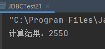

create procedure mypro(in n int, out sum int)
begin
set sum := 0;
repeat
if n % 2 = 0 then
set sum := sum + n;
end if;
set n := n - 1;
until n <= 0
end repeat;
end;
使用CallableStatement
package com.powernode.jdbc;
import com.powernode.jdbc.utils.DbUtils;
import java.sql.CallableStatement;
import java.sql.Connection;
import java.sql.SQLException;
import java.sql.Types;
/**
* ClassName: JDBCTest21
* Description:
* Datetime: 2024/4/12 17:42
* Author: 老杜@动力节点
* Version: 1.0
*/
public class JDBCTest21 {
public static void main(String[] args) {
Connection conn = null;
CallableStatement cs = null;
try {
conn = DbUtils.getConnection();
String sql = "{call mypro(?, ?)}";
cs = conn.prepareCall(sql);
// 给第1个 ? 传值
cs.setInt(1, 100);
// 将第2个 ? 注册为出参
cs.registerOutParameter(2, Types.INTEGER);
// 执行存储过程
cs.execute();
// 通过出参获取结果
int result = cs.getInt(2);
System.out.println("计算结果：" + result);
} catch (SQLException e) {
throw new RuntimeException(e);
} finally {
DbUtils.close(conn, cs, null);
}
}
}
执行结果：

程序解说： 使用JDBC代码调用存储过程需要以下步骤：
使用以下代码加载MySQL的JDBC驱动程序：
Class.forName("com.mysql.jdbc.Driver");
使用以下代码连接到MySQL数据库：
Connection conn = DriverManager.getConnection("jdbc:mysql://localhost:3306/mydb", "user", "password");
其中，第一个参数为连接字符串，按照实际情况修改；第二个参数为用户名，按照实际情况修改；第三个参数为密码，按照实际情况修改。
使用以下代码创建CallableStatement对象：
CallableStatement cstmt = conn.prepareCall("{call mypro(?, ?)}");
其中，第一个参数为调用存储过程的语句，按照实际情况修改；第二个参数是需要设定的参数。
使用以下代码设置输入参数：
cstmt.setInt(1, n);
其中，第一个参数是参数在调用语句中的位置，第二个参数是实际要传入的值。
使用以下代码注册输出参数：
cstmt.registerOutParameter(2, Types.INTEGER);
其中，第一个参数是要注册的参数在调用语句中的位置，第二个参数是输出参数的类型。
使用以下代码执行存储过程：
cstmt.execute();
使用以下代码获取输出参数的值：
int sum = cstmt.getInt(2);
其中，第一个参数是输出参数在调用语句中的位置。
使用以下代码关闭连接和语句对象：
cstmt.close();
conn.close();
上述代码中，可以根据实际情况适当修改存储过程名、参数传递方式、参数类型等内容。